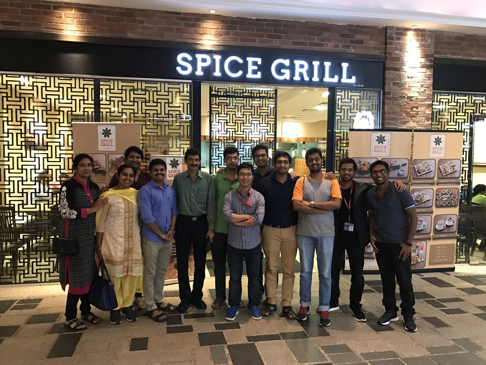
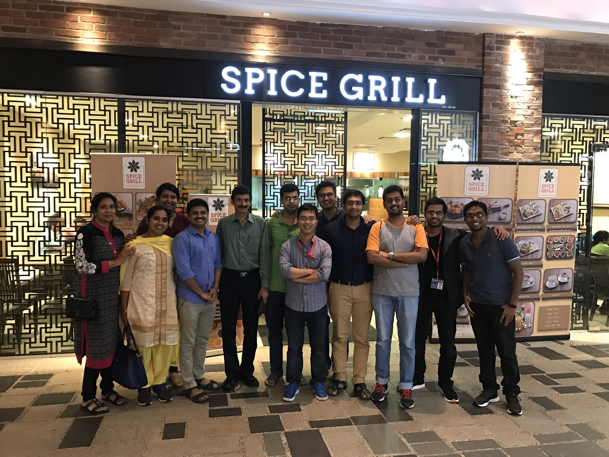
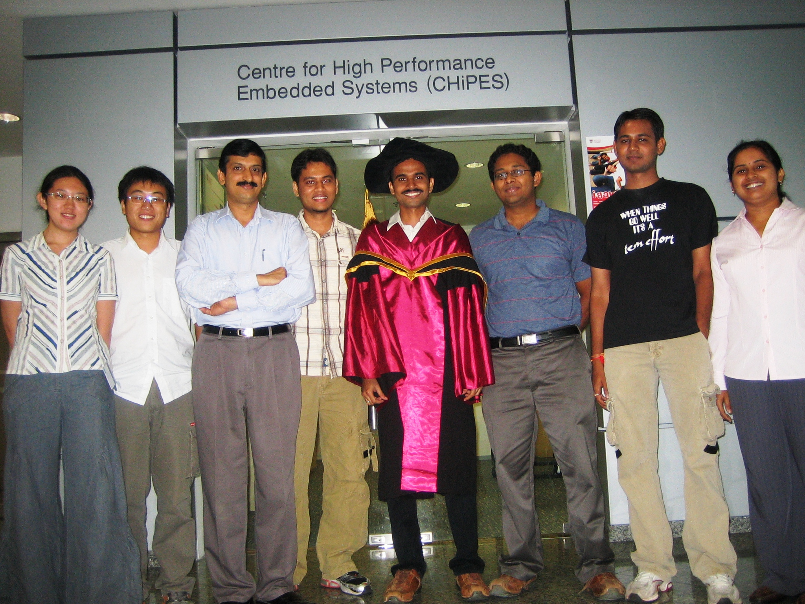
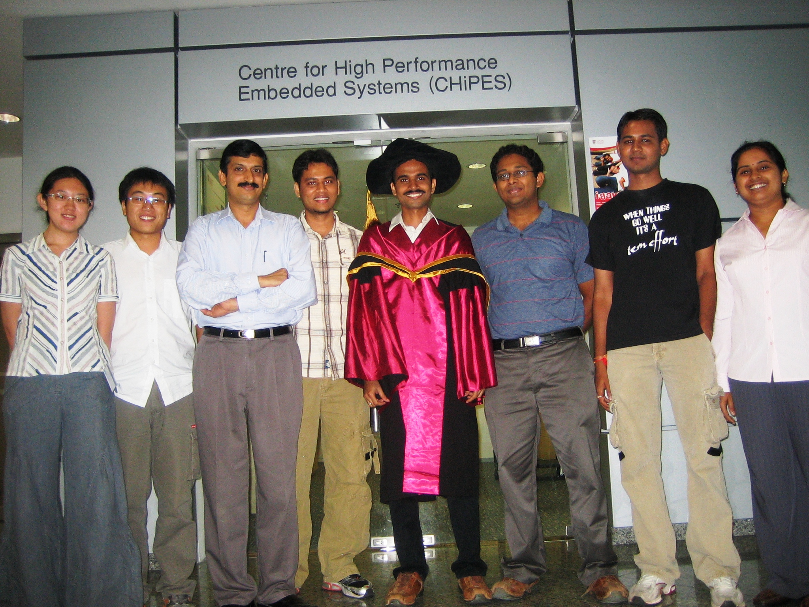

 

Research Team
Curent Research Staff
- Dr. Kavitha P Thomas (Postdoctoral Research Fellow)
Project Title: Decoding of Imagined Hand Movement Kinematics using Brain-Computer Interface
(Funded by Ministry of Education, Singapore, AcRF Tier 2 grant) - Dr. Neethu Robinson (Postdoctoral Research Fellow)
Project Title: Decoding of Imagined Hand Movement Kinematics using Brain-Computer Interface
(Funded by Ministry of Education, Singapore, AcRF Tier 2 grant)
Former Research Staff
- Dr. Abhishek Ambede (Research Fellow)
Project Title: Dynamic Spectrum Access Enabled Cognitive Radio based Sustainable Air-to-Ground Communication System
(Funded by Air Traffic Management Research Institute, Civil Aviation Authority of Singapore) - Dr. Pham Hung Thinh (Research Fellow)
Project Title: Dynamic Spectrum Access Enabled Cognitive Radio based Sustainable Air-to-Ground Communication System
(Funded by Air Traffic Management Research Institute, Civil Aviation Authority of Singapore)
- Mr. Swagato Burman Roy (Research Associate)
Project Title: Dynamic Spectrum Access Enabled Cognitive Radio based Sustainable Air-to-Ground Communication System
(Funded by Air Traffic Management Research Institute, Civil Aviation Authority of Singapore) - Dr. Shreejith Shanker (Research Fellow)
Project Title: Enabling the Internet of Things Through New Hybrid Radio Architectures
(Funded by Ministry of Education, AcRF Tier 1 grant)
Current Appointment: Teaching Fellow, University of Warwick, UK - Ms. Shubha Sharma (Research Associate)
Project Title: Dynamic Spectrum Access Enabled Cognitive Radio based Sustainable Air-to-Ground Communication System
(Funded by Air Traffic Management Research Institute, Civil Aviation Authority of Singapore) -
Dr. Rajendra Prasad Sirigina (Postdoctoral Research Fellow)
Project Title: Dynamic Spectrum Access Enabled Cognitive Radio based Sustainable Air-to-Ground Communication System
(Funded by Air Traffic Management Research Institute, Civil Aviation Authority of Singapore)
-
Dr. Ponnu Jacob (Postdoctoral Research Fellow)
Project Title: Dynamic Spectrum Access Enabled Cognitive Radio based Sustainable Air-to-Ground Communication System
(Funded by Air Traffic Management Research Institute, Civil Aviation Authority of Singapore)
Current Appointment: Senior Technical Program Manager, Amazon, Seattle, USA - Dr. Raja Muthalagu (Postdoctoral Research Fellow)
Project Title: Dynamic Spectrum Access Enabled Cognitive Radio based Sustainable Air-to-Ground Communication System
(Funded by Air Traffic Management Research Institute, Civil Aviation Authority of Singapore)
Current Appointment: Assistant Professor, BITS Pilani, Dubai, UAE - Dr. Kavitha P. Thomas (Postdoctoral Research Fellow)
Project#2 Title: EEG-based Hybrid Brain-Computer Interface System for Biometric Identification
(Funded by Ministry of Education, Singapore, AcRF Tier 1 grant)
Project#1 Title: Brainwave Driven Computer Game - A Pedagogical Tool for Attention-Deficit Children (Funded by Singapore Millennium Foundation)
- Dr. Smitha K. G. (Postdoctoral Research Fellow)
Project Title: Low Complexity Dynamically Reconfigurable Signal Processing for Cognitive Radios
(Funded by Ministry of Education Academic Research Fund Tier 2)
Current Appointment: Lecturer, School of Computer Science and Engineering, NTU Singapore -
Dr. Mahesh R. (Postdoctoral Research Fellow)
Current Appointment: Senior Chief Engineer, Ultrasound Systems, Samsung R & D Institute, Bangalore, India
Curent Ph.D. Students
- Syed Naveen, NTU Singapore (Part-time, Commenced in August 2009),Thesis Submitted
Project Title: Reconfigurable Signal Processing Architectures for Cognitive Radios
- Vikram Shenoy, NTU Singapore (Commenced in August 2013), Thesis Submitted
Project Title: Multimodal Signal Processing Techniques for Brain Computer Interface to Analyze Motor Movements
- Ravi Suppiah, NTU Singapore (Part-time, Commenced in August 2013)
Project Title: Brain-Computer Interface Design for Neurofeedback Training on the Alpha, Beta and Gamma frequency bands in EEG
- Tushar Chouhan, NTU Singapore (Commenced in August 2015)
Project Title: Decoding Hand Kinematics and Motor Imagery using EEG-based Brain-Computer Interface
- Libin K. Mathew, NTU Singapore (Commenced in August 2015)
Project Title: Spectrum Sensing for Air-to-ground Communications - Aung Aung Phyo Wai, NTU Singapore (Part-time, Commenced in August 2015)
Project Title: Adaptive Hybrid Brain-Computer Interface - Mane Ravikiran, NTU Singapore (Commenced in August 2016)
Project Title: Decoding of Imagined Hand Movement Kinematics using Brain-Computer Interface - Jijomon C. M., IIT Palakkad (Commenced in July 2017)
Project Title: Signal Processing for Robust Brain-Computer Interface Systems
Graduated Ph.D. Students
- Sumedh Dhabu, NTU Singapore (Year of graduation - 2016)
Project Title: Design and Implementation of Digital Filters with Very High Frequency Response Flexibility for Multi- Standard Wireless Communication Receivers
- Abhishek Ambede, NTU Singapore (Year of graduation - 2016)
Project Title: Design of Low Complexity Variable Digital Filters and Filter Banks for Software Defined Radio Receivers
-
Neethu Robinson, NTU Singapore (Year of graduation - 2015)
Project Title: Signal Processing Techniques for Motor Control Brain Computer Interface Systems
Employment after PhD: Assistant Professor, BITS Pilani, Goa, India
Current Appointment: Postdoctoral Research Fellow, NTU - Narendar Madhavan, NTU Singapore (Year of graduation - 2014)
Project Title: Advanced Baseband Algorithms and Low Power Implementations for Wireless Communications
Present Employment: Research Engineer, Toshiba Corporate Lab - Wireless Communications, Tokyo, Japan
- Qian Hanhua, NTU Singapore (Year of graduation - 2014)
Role: Co-Supervisor
Project Title: Thermal management of 3D integrated circuits with microchannel-based liquid cooling
- Sumit Jagdish, NTU Singapore (Year of graduation - 2013)
Project Title: Signal Processing Circuits for Spectrum Sensing in Cognitive Radios
Present Employment: Assistant Professor, IIIT - Delhi, India
- Lin Mengda, NTU Singapore (Year of graduation - 2012)
Project Title: Design and Implementation of a Low Power Wireless Communication Channelizer and Signal detector
- Navin Michael, NTU Singapore (Year of graduation - 2012, Role: Main Supervisor)
Project funded by Merlion PhD grant (France-Singapore Cooperation Platform in Science & Technology in collaboration with SUPELEC, Rennes, France)
Project Title: Design of a Low Power, Reconfigurable Digital Front-end for a Multi-mode SDR Handset
Present Employment: Research Fellow, Singapore Institute of Clinical Sciences, A*STAR, Singapore
- Kavitha P. Thomas, NTU Singapore (Year of graduation - 2011, Role: Co-Supervisor)
Project Title: Efficient EEG Frequency Band Selection Techniques for a Robust Motor Imagery based Brain-Computer Interface
Present Employment: Research Fellow, School of Computer Engineering, NTU, Singapore
- Smitha K.G., NTU Singapore (Year of graduation - 2010, Role: Sole Supervisor)
Project Title: Low Power and High Speed Digital Filters for Wireless Communication Receivers
Present Employment: Lecturer, School of Computer Science and Engineering, NTU, Singapore
- Mahesh R., NTU Singapore (Year of graduation - 2009, Role: Sole Supervisor)
Project Title: Reconfigurable Low Complexity Digital Filter banks for Software Radio Receivers
Present Employment: Senior Chief Engineer, Ultrasound Systems, Samsung R & D Institute, Bangalore, India
- Huang Beilei, NTU Singapore (Year of graduation - 2008, Massey University, Wellington, New Zealand)
Role: Co-Supervisor
Project Title: Sampling Theory for Non-Bandlimited Signals and Its Applications
Main Supervisor: Dr. Edmund Lai, Massey University, Wellington, New Zealand